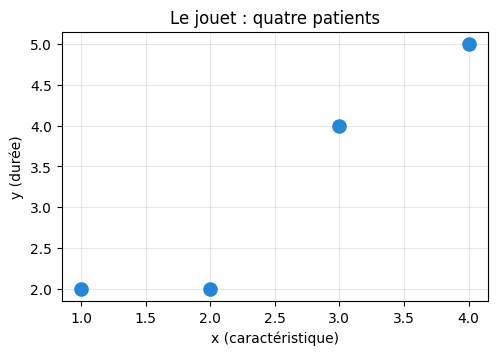
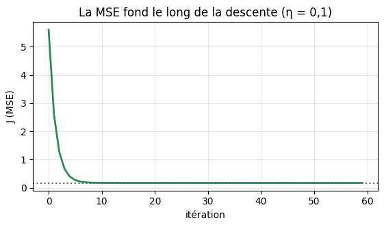
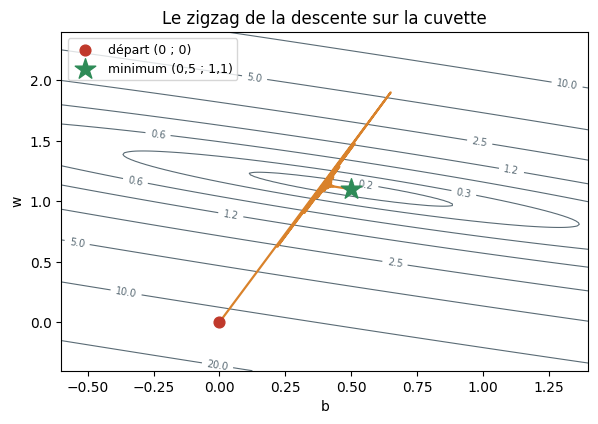
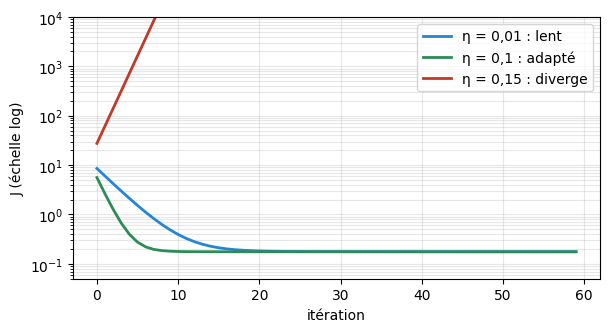
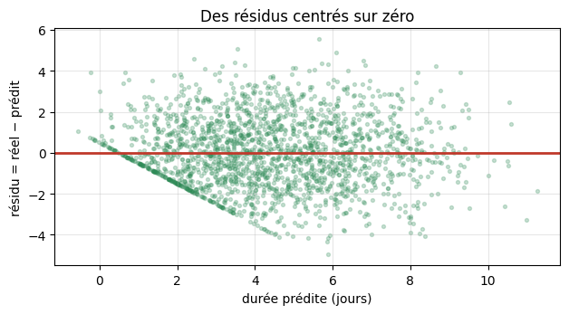
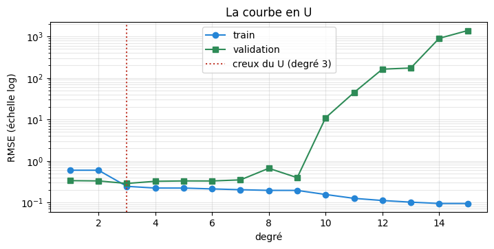
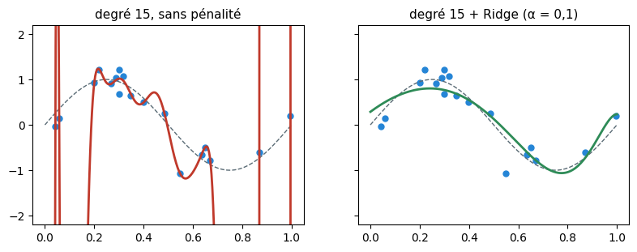
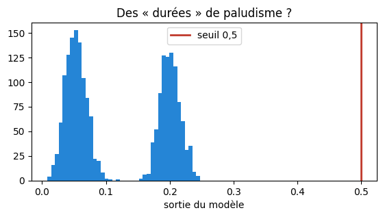

Prédire un nombre : la régression linéaire, de l’équation normale à Ridge
Dr. El Hadji Bassirou TOURÉ · DMI · FST · UCAD
La Séance 3 a prédit une classe ; la Séance 4 a appris à préparer les données. Ce TP prédit une quantité — la durée d’hospitalisation, en jours. Au programme, refait à la main puis confronté à scikit-learn : la MSE, l’équation normale, la descente de gradient codée pas à pas, les métriques MAE/RMSE/R², la courbe en U du sur-ajustement et Ridge qui la dompte.
Durée estimée : 1h30. Exécuter les cellules dans l’ordre, de haut en bas.
Partie 0 — Mise en place
Les outils, puis le générateur DataSANTÉ-221 — le même qu’aux séances précédentes.
import numpy as npimport pandas as pdimport matplotlib.pyplot as pltnp.set_printoptions(precision=4, suppress=True)pd.set_option("display.precision", 3)print("Outils prêts. NumPy", np.__version__, "· pandas", pd.__version__)
# La cible du jour est continue : la durée d'hospitalisation, en joursdf[["age", "glycemie", "hemoglobine", "fievre", "saison", "duree_hospit_j"]].head(3)
age
glycemie
hemoglobine
fievre
saison
duree_hospit_j
0
47
9.3
11.8
38.0
0
3.8
1
18
5.1
13.0
39.5
1
0.5
2
56
7.2
9.5
37.1
1
6.5
# Un vecteur y qui vit dans R, plus dans {0, 1}y_apercu = df["duree_hospit_j"]print("moyenne :", round(y_apercu.mean(), 2), "jours · médiane :", y_apercu.median(),"· min :", y_apercu.min(), "· max :", y_apercu.max())
moyenne : 4.32 jours · médiane : 4.1 · min : 0.5 · max : 15.3
Lecture. La matrice \(X\) est inchangée depuis la Séance 3 ; la nouveauté est dans \(y\) : des réels entre \(0{,}5\) et \(15{,}3\) jours. L’erreur ne sera plus « correct/incorrect » mais une distance — d’où de nouvelles métriques.
Partie 1 — Le jouet et la MSE
Tout le formalisme de la séance se vérifie d’abord sur un jouet de quatre patients : \(x = [1, 2, 3, 4]\) (une caractéristique) et \(y = [2, 2, 4, 5]\) (la durée).
# Le jouet : quatre patients, une caractéristiquex_j = np.array([1., 2., 3., 4.])y_j = np.array([2., 2., 4., 5.])plt.figure(figsize=(5.5, 3.5))plt.scatter(x_j, y_j, s=90, color="#2585D6", zorder=3)plt.xlabel("x (caractéristique)"); plt.ylabel("y (durée)")plt.title("Le jouet : quatre patients"); plt.grid(alpha=0.3)plt.show()

Le deck propose la droite \(\hat y = 0{,}5 + 1{,}1\,x\). La MSE juge cette droite : résidus \(r_i = y_i - \hat y_i\), carrés, moyenne.
# La MSE de la droite candidate 0,5 + 1,1 x — à la mainb, w =0.5, 1.1y_chapeau = b + w * x_jresidus = y_j - y_chapeauprint("prédictions :", y_chapeau)print("résidus :", residus)print("carrés :", residus**2)print("MSE :", np.mean(residus**2))
# La même MSE pour la droite plate (toujours répondre la moyenne)y_plat = np.full(4, y_j.mean())print("droite plate : y =", y_j.mean(), "partout")print("MSE :", np.mean((y_j - y_plat)**2))
droite plate : y = 3.25 partout
MSE : 1.6875
Lecture.\(0{,}175\) contre \(1{,}688\) : la MSE départage sans ambiguïté — la droite ajustée fait dix fois mieux que la droite paresseuse. Les deux nombres resserviront.
Exercice. Calculer, sur le même jouet, la MSE de la droite \(\hat y = 1 + x\). Le résultat attendu est \(0{,}25\).
# Calculer la MSE de la droite y = 1 + x sur le jouet
Partie 2 — L’équation normale, à la main
Le minimum de la MSE se calcule exactement. D’abord les formules fermées à une variable, puis la version matricielle — celle que LinearRegression applique.
# Confrontation : scikit-learn fait-il le même calcul ?from sklearn.linear_model import LinearRegressionlr_jouet = LinearRegression().fit(x_j.reshape(-1, 1), y_j)print("scikit-learn : intercept =", lr_jouet.intercept_, "· coef =", lr_jouet.coef_[0])assert np.allclose(theta, [lr_jouet.intercept_, lr_jouet.coef_[0]])print("identique à l'équation normale calculée à la main — vérifié.")
scikit-learn : intercept = 0.5 · coef = 1.1
identique à l'équation normale calculée à la main — vérifié.
Lecture. Trois chemins — formules fermées, équation normale, LinearRegression — un seul point d’arrivée : \((\hat b, \hat w) = (0{,}5\,;\,1{,}1)\). La solution exacte existe et l’outil ne fait rien d’autre que ce calcul.
Exercice. Sur un autre jeu, on a obtenu \(\tilde X^\top\tilde X = \begin{pmatrix}2 & 3\\ 3 & 5\end{pmatrix}\) et \(\tilde X^\top y = \begin{pmatrix}4\\ 7\end{pmatrix}\). Résoudre l’équation normale avec np.linalg.solve. Le résultat attendu est \((-1, 2)\).
# Résoudre l'équation normale pour XtX = [[2, 3], [3, 5]] et Xty = [4, 7]
Partie 3 — La descente de gradient, codée pas à pas
Quand la solution exacte coûte trop cher (colinéarité, très grande dimension), on descend la cuvette : \(\theta \leftarrow \theta - \eta\,\nabla J(\theta)\), avec pour la MSE des gradients qui ne sont que des moyennes de résidus : \(\partial J/\partial b = -\tfrac{2}{n}\sum r_i\) et \(\partial J/\partial w = -\tfrac{2}{n}\sum x_i r_i\).
# La descente de gradient en sept lignesdef descente(eta, n_iter, b0=0.0, w0=0.0): b, w, histoire = b0, w0, []for t inrange(n_iter): r = y_j - (b + w * x_j) # résidus au point courant grad_b =-2* np.mean(r) # pente de J selon b grad_w =-2* np.mean(x_j * r) # pente de J selon w b, w = b - eta * grad_b, w - eta * grad_w histoire.append((b, w, np.mean((y_j - (b + w * x_j))**2)))return np.array(histoire)hist = descente(eta=0.1, n_iter=300)print("it 1 :", hist[0]) # attendu : b=0.65, w=1.9, J=5.60print("it 2 :", hist[1])print("it 3 :", hist[2])
it 1 : [0.65 1.9 5.5975]
it 2 : [0.22 0.625 2.6106]
it 3 : [0.5135 1.4775 1.2695]
# La trajectoire complète : J fond, (b, w) convergentprint("it 10 :", hist[9])print("it 100 :", hist[99])print("it 300 :", hist[299], " <- la solution de l'équation normale, retrouvée")plt.figure(figsize=(6.5, 3.2))plt.plot(hist[:60, 2], color="#2E8B57", lw=2)plt.axhline(0.175, color="#5A6B75", ls=":")plt.xlabel("itération"); plt.ylabel("J (MSE)")plt.title("La MSE fond le long de la descente (η = 0,1)"); plt.grid(alpha=0.3)plt.show()
it 10 : [0.4097 1.1075 0.1802]
it 100 : [0.4946 1.1018 0.175 ]
it 300 : [0.5 1.1 0.175] <- la solution de l'équation normale, retrouvée

Lecture. Itération 1 : gradients \((-6{,}5\,;\,-19)\), le pas catapulte \((b,w)\) à \((0{,}65\,;\,1{,}9)\) — trop loin ; l’itération 2 sur-corrige en sens inverse : le zigzag. Mais chaque rebond rétrécit et, à l’itération 300, la descente s’immobilise sur \((0{,}5\,;\,1{,}1)\) : le point exact de l’équation normale. Deux algorithmes, un même fond de cuvette.
# La trajectoire vue de dessus : les courbes de niveau de J(b, w)bs, ws = np.meshgrid(np.linspace(-0.6, 1.4, 200), np.linspace(-0.4, 2.4, 200), indexing="ij")J_grille = np.mean((y_j[None, None, :] - (bs[:, :, None] + ws[:, :, None]*x_j[None, None, :]))**2, axis=2)plt.figure(figsize=(6.8, 4.4))cs = plt.contour(bs, ws, J_grille, levels=[0.2, 0.3, 0.6, 1.2, 2.5, 5, 10, 20], colors="#5A6B75", linewidths=0.8)plt.clabel(cs, fontsize=7)traj = np.vstack([[0, 0], hist[:, :2]])plt.plot(traj[:, 0], traj[:, 1], color="#D9822B", lw=1.6)plt.scatter([0], [0], color="#C0392B", s=60, label="départ (0 ; 0)", zorder=4)plt.scatter([0.5], [1.1], marker="*", s=240, color="#2E8B57", label="minimum (0,5 ; 1,1)", zorder=4)plt.xlabel("b"); plt.ylabel("w"); plt.legend(fontsize=9)plt.title("Le zigzag de la descente sur la cuvette"); plt.show()

# Le pas eta décide de tout : trop petit, adapté, trop grandplt.figure(figsize=(6.8, 3.4))for eta, couleur, etiquette in [(0.01, "#2585D6", "η = 0,01 : lent"), (0.10, "#2E8B57", "η = 0,1 : adapté"), (0.15, "#C0392B", "η = 0,15 : diverge")]: plt.plot(descente(eta, 60)[:, 2], color=couleur, lw=2, label=etiquette)plt.yscale("log"); plt.ylim(5e-2, 1e4)plt.xlabel("itération"); plt.ylabel("J (échelle log)")plt.legend(); plt.grid(alpha=0.3, which="both"); plt.show()print("J à l'itération 20 pour η = 0,15 :", descente(0.15, 20)[-1, 2])

J à l'itération 20 pour η = 0,15 : 152871435.7166353
Lecture.\(\eta = 0{,}01\) descend mais lambine ; \(\eta = 0{,}1\) atteint le fond en vingt pas ; \(\eta = 0{,}15\)diverge — \(J\) dépasse \(10^{8}\) en vingt itérations. Le pas ne choisit pas la direction (le gradient s’en charge), seulement la longueur de l’enjambée.
Exercice. Relancer descente avec \(\eta = 0{,}05\) et compter, à l’aide de l’historique, le nombre d’itérations nécessaires pour passer sous \(J < 0{,}18\). Comparer avec \(\eta = 0{,}1\).
# Avec eta = 0,05 : combien d'itérations pour J < 0,18 ?
Le pont scikit-learn : SGDRegressor
LinearRegression résout l’équation normale ; SGDRegressor descend le gradient (variante stochastique : pente estimée sur des sous-échantillons). Comme tout algorithme à descente, il exige des variables standardisées — la cuvette doit être ronde (Séance 4).
# Les deux solveurs sur DataSANTÉ-221 : même cible, deux cheminsfrom sklearn.model_selection import train_test_splitfrom sklearn.linear_model import SGDRegressorfrom sklearn.preprocessing import StandardScalerfrom sklearn.pipeline import make_pipelinecolonnes = ["age", "glycemie", "hemoglobine", "fievre", "saison"]X = df[colonnes]y = df["duree_hospit_j"]X_train, X_test, y_train, y_test = train_test_split(X, y, test_size=0.2, random_state=42)exact = LinearRegression().fit(X_train, y_train)iteratif = make_pipeline(StandardScaler(), SGDRegressor(max_iter=1000, random_state=0)).fit(X_train, y_train)print("R² test — équation normale :", round(exact.score(X_test, y_test), 4))print("R² test — descente de gradient :", round(iteratif.score(X_test, y_test), 4))
R² test — équation normale : 0.598
R² test — descente de gradient : 0.5988
Lecture. Deux R² quasi identiques : même cuvette, même fond. Sur \(5\) variables, l’équation normale est imbattable ; la descente prendra le relais quand les variables se compteront en milliers — et elle sera le seul chemin des réseaux de neurones.
Partie 4 — MAE, RMSE et R², à la main
Trois métriques pour un nombre : deux en jours (MAE, RMSE), une sans unité (R², comparaison à la baseline-moyenne).
# MAE et RMSE sur l'exemple du deck : erreurs absolues (1, 1, 1, 1, 6)erreurs = np.array([1., 1., 1., 1., 6.])mae = np.mean(erreurs)rmse = np.sqrt(np.mean(erreurs**2))print("MAE :", mae, "jours")print("RMSE :", round(rmse, 2), "jours <- le carré surtaxe la grande erreur")
MAE : 2.0 jours
RMSE : 2.83 jours <- le carré surtaxe la grande erreur
# Le R² du jouet, décomposé — puis vérifié contre scikit-learnfrom sklearn.metrics import r2_scoress_res = np.sum((y_j - (0.5+1.1*x_j))**2) # erreur du modèless_tot = np.sum((y_j - y_j.mean())**2) # erreur de la moyenner2_main =1- ss_res/ss_totprint("SS_res =", ss_res, "· SS_tot =", ss_tot, "· R² =", round(r2_main, 4))assert np.isclose(r2_main, r2_score(y_j, 0.5+1.1*x_j))print("identique à r2_score — vérifié.")
Exercice. Calculer à la main le R² de la droite plate (\(\hat y = \bar y\) partout) sur le jouet. Avant de calculer, prédire le résultat : que vaut \(SS_{res}\) dans ce cas particulier ?
# Le R² de la droite plate sur le jouet
Partie 5 — DataSANTÉ-221 : prédire la durée d’hospitalisation
Le protocole complet de la Séance 3, version régression.
# Les coefficients se lisent en clairpd.DataFrame({"poids": modele.coef_}, index=colonnes).round(3)
poids
age
0.048
glycemie
0.566
hemoglobine
-0.263
fievre
0.011
saison
1.379
Lecture. Le modèle se trompe de \(1{,}35\) jour en moyenne et efface \(60\,\%\) de l’erreur de la baseline. Et ses poids racontent les données : \(+0{,}57\) jour par mmol/L de glycémie, \(+1{,}38\) jour en hivernage, \(-0{,}26\) par g/dL d’hémoglobine, fièvre quasi nulle pour cette cible — le modèle linéaire s’explique, c’est son grand luxe.
# Diagnostic visuel 2 : les résidus en fonction du préditresidus_test = y_test - y_predplt.figure(figsize=(7.2, 3.4))plt.scatter(y_pred, residus_test, s=8, alpha=0.25, color="#2E8B57")plt.axhline(0, color="#C0392B", lw=2)plt.xlabel("durée prédite (jours)"); plt.ylabel("résidu = réel − prédit")plt.title("Des résidus centrés sur zéro"); plt.grid(alpha=0.3)plt.show()

# Le linéaire face à la baseline et à l'arbre de la Séance 3from sklearn.dummy import DummyRegressorfrom sklearn.tree import DecisionTreeRegressorfor nom, m in [("baseline (moyenne)", DummyRegressor()), ("arbre prof. 5", DecisionTreeRegressor(max_depth=5, random_state=0)), ("régression linéaire", modele)]:if nom !="régression linéaire": m.fit(X_train, y_train)print(f"{nom:22s} : R² test = {m.score(X_test, y_test):.3f}")
baseline (moyenne) : R² test = -0.001
arbre prof. 5 : R² test = 0.533
régression linéaire : R² test = 0.598
Lecture. Sur cette cible, le linéaire (\(0{,}598\)) devance l’arbre (\(0{,}533\)) : la durée est fabriquée par des effets additifs — terrain naturel d’une somme pondérée. Chaque famille de modèles a ses terrains ; aucune ne gagne partout.
Exercice. Entraîner un DecisionTreeRegressor de profondeur \(10\) et afficher son R² sur le train et sur le test. Diagnostiquer ce que montre l’écart entre les deux (vocabulaire de la Séance 3).
# Arbre de profondeur 10 : R² train et R² test, puis diagnostic
Partie 6 — Le degré du polynôme : la courbe en U
Quand la relation est courbe, on enrichit les entrées : \(x, x^2, \dots, x^p\). Le degré \(p\) devient un bouton de complexité — et le sur-ajustement guette. Démonstration sur une sinusoïde bruitée de trente points.
# La courbe en U : RMSE train et validation pour les degrés 1 à 15resultats = []for deg inrange(1, 16): m = make_pipeline(PolynomialFeatures(deg), LinearRegression()).fit(x_tr.reshape(-1, 1), y_tr) rmse_tr = np.sqrt(mean_squared_error(y_tr, m.predict(x_tr.reshape(-1, 1)))) rmse_va = np.sqrt(mean_squared_error(y_va, m.predict(x_va.reshape(-1, 1)))) resultats.append((deg, rmse_tr, rmse_va))table_u = pd.DataFrame(resultats, columns=["degré", "RMSE train", "RMSE validation"])table_u.round(3)
degré
RMSE train
RMSE validation
0
1
0.597
0.335
1
2
0.597
0.330
2
3
0.244
0.287
3
4
0.222
0.323
4
5
0.222
0.330
5
6
0.212
0.329
6
7
0.202
0.349
7
8
0.195
0.665
8
9
0.195
0.395
9
10
0.155
10.968
10
11
0.125
44.518
11
12
0.111
163.032
12
13
0.102
173.779
13
14
0.094
903.605
14
15
0.094
1385.519
# La même table, en imageplt.figure(figsize=(8.2, 3.6))plt.plot(table_u["degré"], table_u["RMSE train"], "-o", color="#2585D6", label="train")plt.plot(table_u["degré"], table_u["RMSE validation"], "-s", color="#2E8B57", label="validation")plt.axvline(3, color="#C0392B", ls=":", label="creux du U (degré 3)")plt.yscale("log"); plt.xlabel("degré"); plt.ylabel("RMSE (échelle log)")plt.legend(); plt.grid(alpha=0.3, which="both"); plt.title("La courbe en U"); plt.show()

Lecture. La RMSE de train descend toujours — de \(0{,}60\) à \(0{,}09\) : plus de complexité ne peut que mieux coller au train. La validation, elle, atteint son creux au degré \(3\) (\(0{,}287\)) puis explose — \(1386\) au degré \(15\). À ne regarder que le train, on choisirait le pire modèle. Seule une donnée jamais vue dit la vérité.
Exercice. Dans la table table_u, identifier par le code le degré qui minimise la RMSE de validation (idxmin), puis celui qui minimise la RMSE de train. Constater qu’ils ne coïncident pas.
# Degré du minimum en validation, degré du minimum en train
Partie 7 — Ridge : l’explosion domptée
Le degré 15 qui explose cache un symptôme : des coefficients géants. Ridge ajoute un loyer sur les poids — \(J_{ridge} = \text{MSE} + \alpha\sum_j w_j^2\) — et les ramène à la raison.
# Le symptôme : le plus grand coefficient du degré 15 sans pénalitésans_penalite = make_pipeline(PolynomialFeatures(15), StandardScaler(), LinearRegression()).fit(x_tr.reshape(-1, 1), y_tr)coefs_libres = sans_penalite.named_steps["linearregression"].coef_print("plus grand |coefficient| :", f"{np.abs(coefs_libres).max():,.0f}")print("RMSE validation :", round(np.sqrt(mean_squared_error( y_va, sans_penalite.predict(x_va.reshape(-1, 1)))), 1))
plus grand |coefficient| : 9,188,339,655
RMSE validation : 1389.2
# Le remède : le même degré 15, sous trois doses de Ridgefrom sklearn.linear_model import Ridgefor alpha in [0.001, 0.1, 100]: m = make_pipeline(PolynomialFeatures(15), StandardScaler(), Ridge(alpha=alpha)).fit(x_tr.reshape(-1, 1), y_tr) coefs = m.named_steps["ridge"].coef_ rmse_va = np.sqrt(mean_squared_error(y_va, m.predict(x_va.reshape(-1, 1))))print(f"alpha = {alpha:7} : max|w| = {np.abs(coefs).max():8.2f} · RMSE validation = {rmse_va:.3f}")
# Avant / après, en imageridge_01 = make_pipeline(PolynomialFeatures(15), StandardScaler(), Ridge(alpha=0.1)).fit(x_tr.reshape(-1, 1), y_tr)fig, axes = plt.subplots(1, 2, figsize=(9.5, 3.2), sharey=True)for ax, m, titre, c in [(axes[0], sans_penalite, "degré 15, sans pénalité", "#C0392B"), (axes[1], ridge_01, "degré 15 + Ridge (α = 0,1)", "#2E8B57")]: ax.scatter(x_tr, y_tr, s=25, color="#2585D6") ax.plot(grille, np.sin(2*np.pi*grille), color="#5A6B75", ls="--", lw=1) ax.plot(grille, m.predict(grille.reshape(-1, 1)), color=c, lw=2) ax.set_ylim(-2.2, 2.2); ax.set_title(titre, fontsize=11)plt.show()

Lecture. Sans pénalité : un coefficient à \(9\) milliards et une validation à \(1386\). Avec \(\alpha = 0{,}001\) : coefficients sous \(8\), validation à \(0{,}31\). À \(\alpha = 0{,}1\), le degré 15 régularisé (\(0{,}268\)) fait même mieux que le meilleur degré sans pénalité (\(0{,}287\)). Et à \(\alpha = 100\), le modèle bridé sous-ajuste (\(0{,}51\)) : \(\alpha\) est un bouton de complexité, comme le degré — il se règle donc sur la validation.
Exercice. Reprendre la boucle Ridge avec \(\alpha = 1000\) : afficher le plus grand \(|w_j|\) et la RMSE de validation. Vers quel modèle la courbe se dirige-t-elle quand \(\alpha\) devient immense ?
Le paludisme vaut \(0\) ou \(1\). Une régression linéaire accepte volontiers cette cible — voyons ce que ça donne, et pourquoi ce TP s’arrête juste avant la Séance 6.
# Une régression linéaire sur la cible paludisme (0/1)X_palu = df[colonnes]y_palu = df["paludisme"]Xp_tr, Xp_te, yp_tr, yp_te = train_test_split(X_palu, y_palu, test_size=0.2, random_state=42, stratify=y_palu)reg_palu = LinearRegression().fit(Xp_tr, yp_tr)sorties = reg_palu.predict(Xp_te)print("sorties du modèle : min =", round(sorties.min(), 3), "· max =", round(sorties.max(), 3))plt.figure(figsize=(6.5, 3))plt.hist(sorties, bins=40, color="#2585D6")plt.axvline(0.5, color="#C0392B", lw=2, label="seuil 0,5")plt.xlabel("sortie du modèle"); plt.legend(); plt.title("Des « durées » de paludisme ?")plt.show()
sorties du modèle : min = 0.008 · max = 0.248

# Seuiller à 0,5 pour en faire une classe... et comparer à la baselinefrom sklearn.metrics import accuracy_scoreclasses_predites = (sorties >=0.5).astype(int)print("positifs prédits :", classes_predites.sum(), "sur", len(classes_predites))print("accuracy du modèle seuillé :", accuracy_score(yp_te, classes_predites))print("accuracy de la baseline « jamais palu » :",round(accuracy_score(yp_te, np.zeros_like(yp_te)), 4))
positifs prédits : 0 sur 2000
accuracy du modèle seuillé : 0.8825
accuracy de la baseline « jamais palu » : 0.8825
Lecture. Les sorties plafonnent à \(0{,}25\) : seuillées à \(0{,}5\), elles ne prédisent aucun positif — et l’accuracy retombe exactement sur la baseline \(0{,}8825\) de la Séance 3. La régression linéaire n’est pas l’outil d’une classe : sa sortie n’est même pas bornée entre \(0\) et \(1\), et la MSE n’est pas la bonne façon de la juger sur une classe rare (\(11{,}8\,\%\) de positifs).
Séance 6 : la régression logistique — la même somme pondérée, passée dans une fonction qui en fait une probabilité — un seuil que l’on choisit, et des métriques qui ne mentent pas quand une classe est rare.
Synthèse — à compléter
L’équation normale donne le minimum ………. de la MSE ; la descente de gradient l’approche par ………. successifs.
Le gradient pointe vers la plus forte ………. ; on avance donc dans le sens ………., avec un pas \(\eta\) ni trop petit (lent) ni trop grand (……….).
MAE et RMSE s’expriment en ………. ; la RMSE surtaxe les ………. erreurs ; le R² compare le modèle à la ………..
La RMSE de train ………. toujours avec la complexité ; le bon degré se lit au creux du U de ………..
Ridge pénalise la ………. des coefficients ; son bouton \(\alpha\) se règle sur la validation, et il exige des variables ………. (Séance 4).